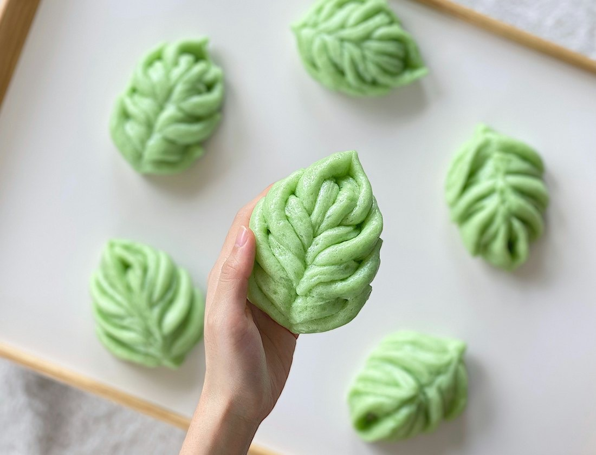
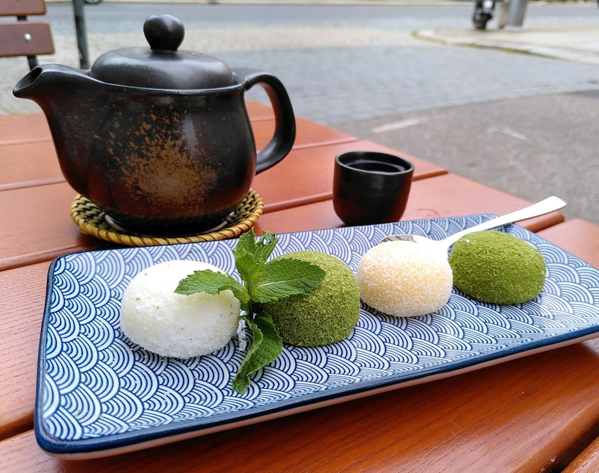
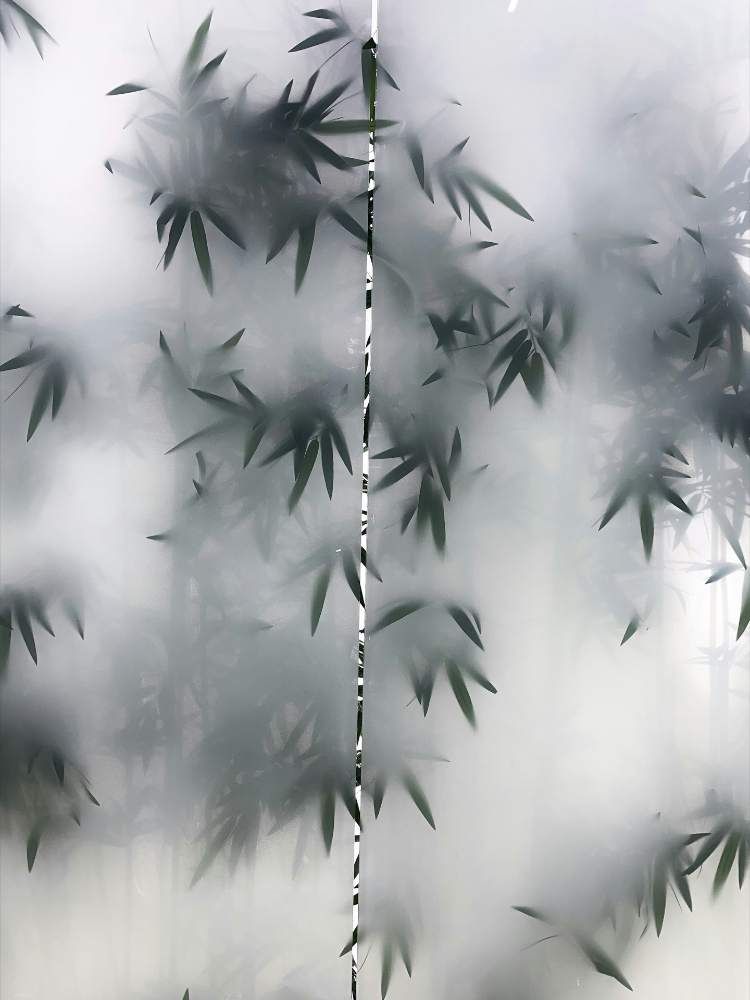

笹団子
軟化剤や酵素は使わず、餅粉を多めに。冷めてもおいしい甘さに調えています。
新潟名産 笹団子 新潟市中央区西堀前通
明治16年創業。『新潟名産笹団子』の火付け役として、初代から六代目まで、ほんものの味を受け継いでいます。
笹団子ができるまで
よもぎの
団子
まんなかは、よもぎを練りこんだ団子です。
笹団子の3Dイメージです
創業以来『ほんものの味を』をモットーに、初代から現在六代目まで受け継いでおります。原材料はできる限り新潟県内産にこだわって吟味し、昔ながらの製法でお作りしています。
昭和36年には笹団子・笹粽が新潟市土産品に認定。お茶会用のお菓子から贈り物、鏡餅や一升餅まで、小ロットからでもご相談を承ります。

軟化剤や酵素は使わず、餅粉を多めに。冷めてもおいしい甘さに調えています。
鏡餅・切り餅・一升餅など。餅つきイベントのお手伝いもしています。

お茶会用のお菓子や、オーダーメイドも小ロットからご相談ください。

| ご注文 | お電話・FAX・メールで承ります |
|---|---|
| 休業日 | 月ごとに店頭とホームページでお知らせします |
お急ぎのご注文は、お電話・FAXがおすすめです。